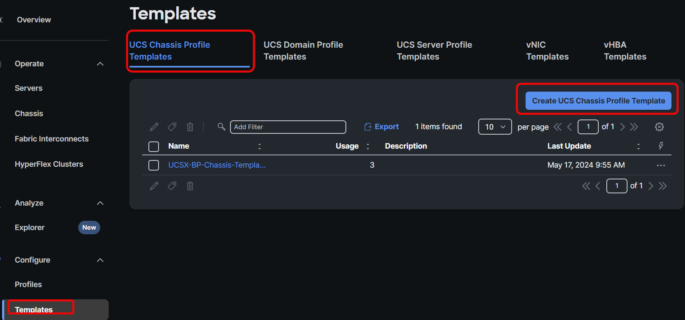
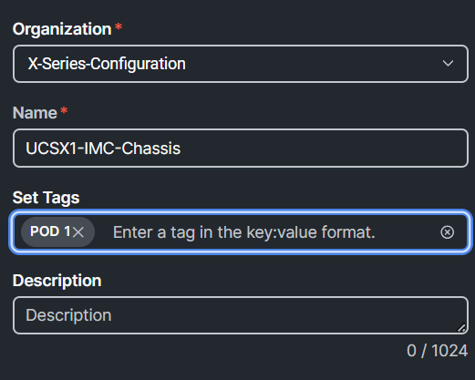
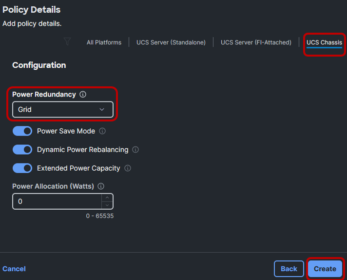
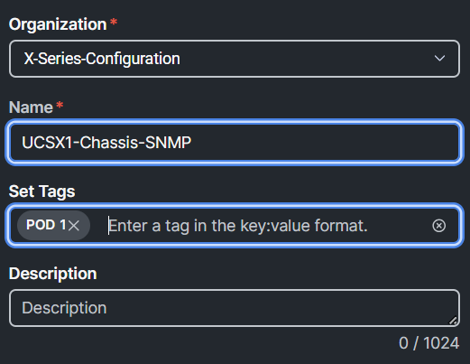
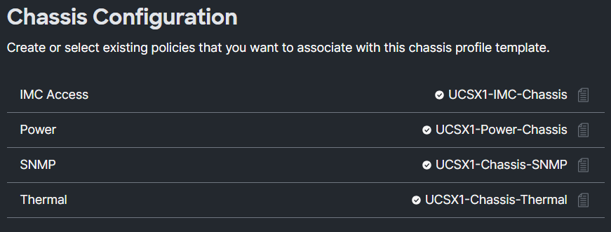

Task 3: Create Chassis Policy Template
To create a Chassis Profile Template, Go to Templates, UCS Chassis Profile Template, and click Create UCS Chassis Profile Template:

Figure 89
Provide a name, set the tag, and click Next:

Figure 90
Create a new IMC Access Policy by clicking Select Policy next to IMC Access and then click Create Policy. Provide a name, set the tag, and click Next:

Figure 91
Select the UCS Chassis tab, change the VLAN ID to 70, click Select IP Pool under IP Pool, select the UCSXKVMPool radio button from the list, press Select, then press Create:

Figure 92
Best practice:
- Every chassis do need two IP addresses from a pool. Create a separate Chassis-IP-Pool which is non overlapping with other IP Pools
Create a new Power Policy by clicking Select Policy next to Power and then click Create Policy. Provide a name, set the tag, and click Next:

Figure 93
Select UCS Chassis, ensure Grid is selected for the Power Redundancy Policy, and click Create:

Figure 94
Best Practices
- Redundancy per customer requirements
- Default options recommended for others
- Dynamic power rebalancing will re-allocate power between servers if competing for power in power constrained environments.
- Power allocation sets an input power limit. Throttling is used to stay within the limit.
Create a new Chassis SNMP Policy by clicking Select Policy next to SNMP and then click Create Policy. Provide a name, set the tag, and click Next:

Figure 95
Select UCS Chassis, type ACString in the Access Community String, and click Create:

Figure 96
Create a new Chassis Thermal Policy by clicking Select Policy next to Thermal and then click Create Policy. Provide a name, set the tag, and click Next:

.
Figure 97
Best Practices
- Applies to chassis or rack mount servers
- Sets the base fan speed
- Workloads with frequent transitions from idle to max may throttle while fan speeds ramp from lower levels.
- Increase policy to prevent throttling.
Select UCS Chassis, ensure Balanced is selected for the Fan Control Mode, and click Create.

Figure 98
After the creation of the policies, the chassis configuration should look similar to the image below. Click Next and Close. (Do NOT click Derive Profiles):

Figure 99